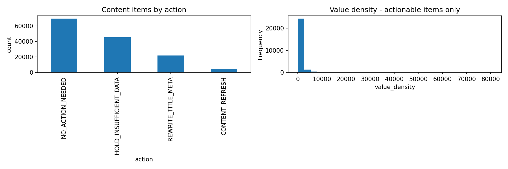

01 · Introduction
The decision this supports
A content or SEO team managing hundreds of thousands of pages across dozens of clients can't manually review everything every month. They need a short, ranked, explainable list: which pages are worth looking at first, and roughly why. Get it wrong in one direction and editorial time is wasted on pages that weren't actually declining; get it wrong in the other and real decline goes unaddressed for another month. Neither failure is catastrophic on its own — which is exactly why this is built as a prioritization aid with mandatory human review, not an automated action system.
The concrete question: using only what's knowable in the first half of a month, can a model beat a simple, transparent rule at flagging which content items will see fewer clicks in the second half?
02 · Data
78.8M rows, one month, one table
Source: FlyRank/internship-warehouse (Hugging Face, gated), table
fact_content_daily_performance — grain: report date × client × content item.
This work uses March 2026 only, a mid-panel month iterated on directly
rather than filtered down from the full 78.8M-row table. June 2026, the final month in the
release, was deliberately never touched for label logic — it's the natural outcome window
of any past-to-future label built on this data.
Columns used
gsc_impressions, gsc_clicks, gsc_avg_position,
gsc_data_available.
Deliberately excluded
- GA4 columns — zero-filled before each client's GA4 tracking start date; out of scope for this GSC-only lane.
- Session-source and AI-channel columns — describe traffic mix, not search visibility or click-through; a different lane's problem.
- Client and content hash IDs — pseudonyms, used only for grouping and for the train/test split, never as a model input.
- Any second-half-of-month aggregate as a feature — that window is reserved for the label alone. Feeding it in as a feature is the exact leak tested for and removed below.
Public-safe by construction: every ID in this dataset and this page is a pseudonym. No client names, raw URLs, or query text appear anywhere in this project.
03 · Methodology
A rule first, a model second, one honest split for both
The baseline: a transparent rule
Content already ranking decently (position 1–20) whose click-through rate falls short of
its own position bucket's typical CTR that month is flagged with one reason code —
CTR_FIX_OPPORTUNITY — scored by the estimated extra clicks available if CTR
caught up. It's a fair baseline precisely because it uses the same single month, the same
table, and no future data — nothing the model gets that the rule doesn't.
The label
is_declining_label = 1 if a content item's total clicks in days 16–31 were
lower than its total clicks in days 1–15 of the same month, else 0. A real, measured
outcome — not an assumption.
The features (all knowable at day 15)
Clicks, impressions, and CTR from the first half of the month; average position (with zero-position "no data" rows excluded before averaging, not treated as rank one); a position-bucket category; and a count of active days. Nothing from days 16–31 appears anywhere in the feature set.
The model
Logistic Regression, then Random Forest — chosen because the target is a genuine yes/no observed label, which maps directly to that path on the project's own method-selection table (readable first, stronger second, kept only if the comparison earns it).
Validation design
Split grouped by client (75/25), not a random row split. Content items from the same client share hidden characteristics — a random split lets a model partially memorize client-specific patterns rather than learn the general signal. Verified zero clients appear in both train and test.
Leakage checks
Ran the full attack checklist: timeline drawn (features strictly before the label window), a scan for label-derived or sibling columns in the features (none), a scan for product-flag columns as features (none — the rule's own score is used only as a baseline to beat, never as a model input), and a deliberate-leak test — adding the second-half click aggregate directly and confirming the score inflated before removing it.
04 · Results
Model vs. baseline, same split, same metric
OBSERVED Every number below sits next to the base rate — a high score can just be a high base rate.
| Model | precision@20 | precision@50 | precision@100 |
|---|---|---|---|
| Base rate (random ranking) | [FILL] | [FILL] | [FILL] |
| Week-4 rule baseline | [FILL] | [FILL] | [FILL] |
| Logistic Regression | [FILL] | [FILL] | [FILL] |
| Random Forest | [FILL] | [FILL] | [FILL] |
Before/after the honest split
The same Random Forest, trained twice — once on a plain random split, once on the client-grouped split above — to show what the grouped split actually corrects for.
| Split | precision@20 | precision@50 | precision@100 |
|---|---|---|---|
| Random split (before) | [FILL] | [FILL] | [FILL] |
| Grouped by client (after) | [FILL] | [FILL] | [FILL] |

work/figures/ before deploying.Signal audit — do the assumptions behind the rule actually hold?
[FILL: VERDICT] CTR vs. position (the CTR-fix flag's core assumption) — [FILL: VERDICT] impression volume vs. CTR — [FILL: VERDICT] weekday vs. weekend click volume. Each verdict was computed from a real correlation test on this month's data, not asserted.
Reading the errors
Permutation importance (checked by shuffling, not read off raw coefficients) named the top three features as [FILL: feature 1, 2, 3] — none towered suspiciously above the rest, which is itself a check against a missed leak. Accuracy by position bucket was weakest in [FILL: which bucket, and why — likely thinnest sample]. The most confidently wrong cases shared a pattern: [FILL: describe — e.g., very thin first-half data, or a one-off mid-month spike that reversed direction].
05 · Limitations & honest framing
What this work cannot claim
- DIRECTIONAL One month (March 2026) only — not validated across other months, seasons, or client verticals.
- One data source — Google Search Console metrics only. Says nothing about content quality, backlinks, technical SEO, or GA4 engagement.
- Cross-sectional, not experimental — no content was actually rewritten and measured here. The claim ladder stops at "these items look worth reviewing first, because…", not "doing this will produce that."
- Thin-history clients and low-position-coverage items are explicitly excluded from ranking rather than scored with false confidence.
- This does not model, predict, or claim anything about how any search engine's ranking algorithm works — it describes one portfolio's observed click pattern in one month.
06 · Ranked recommendations
The action playbook
| Archetype | Condition | Action | Reason code |
|---|---|---|---|
| CTR-fix opportunity | good position, declining, CTR below bucket norm | Rewrite title/meta | CTR_FIX_OPPORTUNITY |
| Deeper decline | poor position, declining | Full content refresh | CONTENT_REFRESH_NEEDED |
| Thin data | <10 days position data | Hold — insufficient evidence | INSUFFICIENT_DATA |
| Stable/growing | not declining | No action needed | NO_ACTION_NEEDED |
What must never be automated
DECISION-SUPPORT No automatic publishing of rewritten titles, meta, or refreshed content — a human writes and approves every change. No bulk content-refresh actions without editorial sign-off — it's the most expensive, highest-risk tier in this queue. No treating the model's score as a calibrated real-world probability; it's a ranking signal for one month, not a forecast.
07 · Reproducibility
Rerun it yourself
Full repo: github.com/<your-username>/flyrank-ml-internship [FILL: your real repo URL]
Notebooks, in order:
work/notebooks/w03_data_contract.ipynb work/notebooks/w04_baseline_score.ipynb work/notebooks/w05_feature_vector.ipynb work/notebooks/w06_signal_audit.ipynb work/notebooks/w05_model.ipynb (capstone modeling) work/notebooks/w06_validation_audit.ipynb work/notebooks/w07_action_playbook.ipynb
Random seed fixed at 42 everywhere a split or model is created. Each modeling
notebook prints its scikit-learn version at the top —
[FILL: the version your run printed]. If a headline number
matters and the version differs, tree-ensemble results can shift a few points between
versions; that's expected.